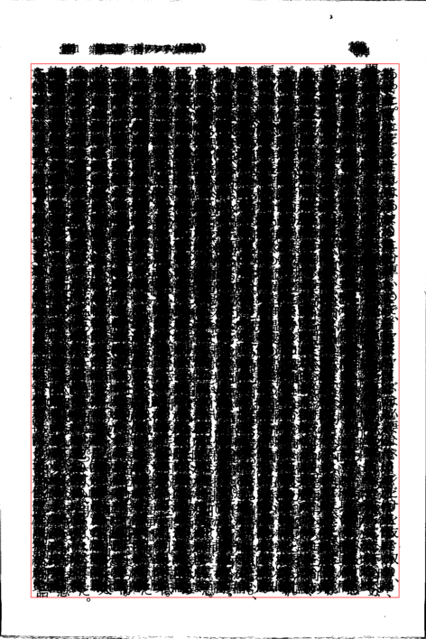
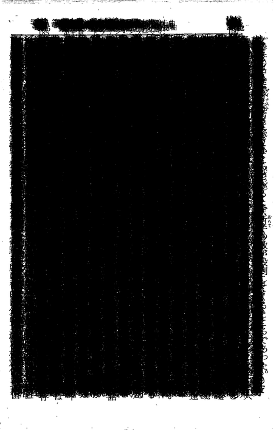

〜2014年8月下旬〜
肝心要は-draw "matte X,Y floodfill"だった。
colorとは違いmatte channelつまりalpha channelを書き換える。
これで簡単にかたまりごとにマスクを作ることが可能になる。
スキャンした画像に対してはこれだけでいい。
% convert foo.pbm -fill none -draw 'matte 500,500 floodfill' -alpha extract -trim -format '%wx%h%O' info: 1360x1971+114+235
-alpha extractでcurrent channelをmatte channelで置き換え、trimした結果を表示。
実際はこれだと500,500と決め打ちになってるのがちょっとまずい。
黒にぶちあたればいいが、白になるかもしれない。
たまたま孤立点に当たるかもしれない。
% convert foo.pbm -fill none -draw 'matte 412,500 floodfill' -alpha extract -trim -format '%wx%h%O' info: 1x2+412+499
そこで確実に黒にするために適当な長さで線を引く。
% convert foo.pbm -fill black -draw 'line 500,500 600,600' -fill none -draw 'matte 500,500 floodfill' -alpha extract -trim -format '%wx%h%O' info: 1360x1971+114+235
これで安定して本文だけの領域が求めれらた。
最終的には500,500とかじゃなくて画像の中心で。
-gravity centerで0,0にすれば中心になるかと思ったが全然ならなかったのは残念。
1024バイトのファイルを探そうとfind . -size 1024とすると全然ヒットしない。
単位が必要かとfind . -size 1024bとしてもだめ。
そこでやっとman findしてみるとなんとデフォルトは1ブロックとある。
1ブロックは512バイトだ。
じゃあなんで1024bはだめなのかというと、なんとbはblockという意味だった。
1024cにしないといけない。二重の罠にはまる。周到すぎるだろ。
412,500がだめだったんだから、そこに線を引かないと意味がない。
% convert foo.pbm -fill none -draw 'matte 412,500 floodfill' -alpha extract -trim -format '%wx%h%O' info: 1x2+412+499 % convert foo.pbm -fill black -draw 'line 412,500 600,600' -fill none -draw 'matte 412,500 floodfill' -alpha extract -trim -format '%wx%h%O' info: 1360x1971+114+235
というわけでうまくいってる。

AndoridのSony Readerアプリのストレージがやたらと食ってるので整理したが、
残したコンテンツの割には容量食いすぎだと思い、直接adb shellで見てみた。
-rw-rw---- root sdcard_r 45175551 2014-03-09 18:28 期間限定土竜の唄（１）-高橋のぼる.mnh -rw-rw---- root sdcard_r 45012838 2014-03-09 18:28 期間限定土竜の唄（２）-高橋のぼる.mnh -rw-rw---- root sdcard_r 39859492 2014-03-09 18:29 期間限定土竜の唄（３）-高橋のぼる.mnh -rw-rw---- root sdcard_r 41817906 2014-03-09 18:29 期間限定土竜の唄（４）-高橋のぼる.mnh -rw-rw---- root sdcard_r 39055619 2014-03-09 18:29 期間限定土竜の唄（５）-高橋のぼる.mnh -rw-rw---- root sdcard_r 40074570 2014-03-09 18:30 期間限定土竜の唄（６）-高橋のぼる.mnh -rw-rw---- root sdcard_r 84497511 2014-06-22 00:21 期間限定幽麗塔 １-乃木坂太郎.mnh -rw-rw---- root sdcard_r 86866253 2014-06-22 00:23 期間限定幽麗塔 ２-乃木坂太郎.mnh -rw-rw---- root sdcard_r 89129212 2014-06-22 00:23 期間限定幽麗塔 ３-乃木坂太郎.mnh -rw-rw---- root sdcard_r 34968148 2014-03-09 18:31 期間限定弁護士のくず（１）-井浦秀夫.mnh -rw-rw---- root sdcard_r 37780547 2014-03-09 18:31 期間限定弁護士のくず（２）-井浦秀夫.mnh -rw-rw---- root sdcard_r 39031202 2014-03-09 18:31 期間限定弁護士のくず（３）-井浦秀夫.mnh -rw-rw---- root sdcard_r 53839727 2014-03-09 20:28 期間限定龍－ＲＯＮ－（１）-村上もとか.mnh -rw-rw---- root sdcard_r 55206455 2014-03-09 18:27 期間限定龍－ＲＯＮ－（２）-村上もとか.mnh -rw-rw---- root sdcard_r 56818203 2014-03-09 18:27 期間限定龍－ＲＯＮ－（３）-村上もとか.mnh
こんな感じで期間限定のコンテンツを発見。これはアプリ上のどこを探しても出てこない。
マンガなので結構でかい。
% numsum -c -x 4 reader-ls.log | numfmt --grouping 789,133,234
800MB近くあるわけで、どうしたもんかと思ったが思い切ってrm 期間限定*で消してみた。
アプリは特に問題ないようだ。他もいろいろ消してなんだかんだで5GBほど空いた。
Sony Readerだけでどんだけ食ってんだよ。
スキャンした本をepubにするとPNGとzipで二重に圧縮することになる。
普通はoptipngとか使ってPNGをさらに圧縮することを考えるが、
これはページ数が多いとやたらと時間がかかるしあまり効率的でない。
そこでPNGは無圧縮にしてzipのほうを最大限にするとどうなるか実験してみた。
convertで1個1個PNG画像へ変換するときに
-define png:compression-level=0
をつければ圧縮されない。ま、要するに違いはこれだけだ。
で、結果は
-rw-r--r-- 1 eban 13253534 2014-08-24 18:28:27 [逢坂剛]-幻の翼.epub -rw-r--r-- 1 eban 14447451 2014-08-24 16:55:52 [逢坂剛]-幻の翼.epub.~1
のように1割とはいかないが簡単にさらに小さくできた。
まあ、zipよりもtar.gzのほうが小さくなるのと同じ原理ではあるが。
考えてみるとzipで圧縮してるだからまとめて圧縮してるわけじゃない。
そうか。zipじゃなくて7zでzipファイルを作ってるから圧縮率が高いんだ。
スキャンした画像からノンブルを除去していると、
どうしても1つパラメータだけで対処できない本が出てくる。
先日の数十枚重ねるという方法でノンブルごと本文とひとかたまりになる場合がある。
つまりそれだけ字の位置があばれているわけで、古い本だとありがち。
しかも対処が難しい。
実際どんな感じかというと、隙間が完全に埋まってしまっている。

-trimすれば正規化できそうだが、
結局ノイズの有無に左右される。
そんなに甘くはない。
考えかたを変えて1ページごとに処理することにして、
横一列の黒画素を数えて山と谷を見るのはどうか。
一気に秋になったかのよう。ことしの夏は真夏しかなかったな。
向う一週間の予報を見ても30度行くか行かないかくらいで、
まじで夏は終わり？
例のtwitterのanalyticsを見てみたら
A problem occurred while loading the page. To use this site, you need to disable AdBlock or any other ads-blocking extension you are using, or customize it to show ads on this site.
とか言われて、なんで広告と関係があるんだと思った。
ああ、ひょっとしてtwitter見てるとたまに変な表示になったりするのはこれが原因だったか？
convertには-qualityというオプションがあるが、これが結構曲者。
PNGの場合は
For the MNG and PNG image formats, the quality value sets the zlib compression
level (quality / 10) and filter-type (quality % 10). Compression levels range
from 0 (fastest compression) to 100 (best but slowest). For compression level
0, the Huffman-only strategy is used, which is fastest but not necessarily the
worst compression.
If filter-type is 4 or less, the specified filter-type is used for all scanlines:
0: none
1: sub
2: up
3: average
4: Paeth
となっている。0から100まで指定できるようなことが書いてあるが、実は100は90と同じ意味。
10の位がcompression levelということになっている。
levelがでも0でもなぜかハフマン圧縮だけは有効になってるらしく無圧縮にはできない。
そこで先日の -define png:compression-level=0 という話になる。
でもGraphicsMagickではこれに対応してないので、結局無圧縮PNGは作れないことになる。
実に残念。
あばれるとは言っても本文自体の大きさは一定なので、
-trimで求めた下底を基準にすることにした。
本文の高さはまあ適当にどれか特徴的なページから手動で計測。
displayなら中クリックでクリックした座標がわかる。
だいたいこんな感じだ。
find images -name '*.pbm.xz' \
parallel -q convert {} \
-chop ${LEFT}x${TOP} \
-gravity SouthEast -chop ${RIGHT}x${BOTTOM} -gravity NorthWest \
-virtual-pixel edge -blur 0x4 -fuzz 10% -trim \
-format "xzcat {} | gm convert \
- -chop ${LEFT}x${TOP} \
-gravity SouthEast -chop ${RIGHT}x${BOTTOM} -gravity NorthWest +repage \
-crop '%[fx:w+10]x%[fx:H+10]+%[fx:page.x>5?page.x-5:0]+%[fx:(page.y+h-H)>10?(page.y+h-H-10):0]' \
-resize $yresize\% \
-gravity center \
-background white -extent 738x965 \
-type grayscale -depth 2 PGM:- | \
convert - \
-define "png:compression-level=0" +repage -strip \
-verbose '$outdir'/{/.}.png" info: | ${sh-sh}
元々は
-crop '%[fx:w+10]x%[fx:h+10]+%[fx:page.x>5?page.x-5:0]+%[fx:page.y>5?page.y-5:0]' \
となっていた。-trimの結果のhは捨てて先の下底基準にしている。
180度回転したほうがわかりやすいかもしれないなあ。
あと-resize 738x965とはしないで全部同じ倍率にしている。
そうしないと見出しのように1行しかないようなページで-trimの結果巨大な文字が現われることになる。
あとGraphicsMagickを使うと2倍ぐらい速くなる。
無圧縮にできないもんだから最終的にはまたImageMagickを使ってるところがあれだ。
これはノンブルが上にある場合なので下にあるときはまずい。
そういう意味でも180度回転のほうがいいな。chopもあるし。